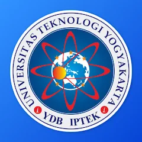

APLIKASI PORTAL MAHASISWA UTY
Aplikasi Portal Mahasiswa UTY adalah salah satu inovasi teknologi dari Universitas Teknologi Yogyakarta (UTY) yang ditujukan untuk mempermudah proses akademik mahasiswa. Aplikasi ini dirancang sebagai solusi digital untuk menyederhanakan berbagai kebutuhan administrasi dan informasi akademik, sehingga mahasiswa dapat mengakses layanan kampus secara praktis di ujung jari mereka. Dengan berbagai fitur unggulan yang ditawarkan, Portal Mahasiswa UTY menjadi salah satu alat yang penting dalam menunjang aktivitas pendidikan di lingkungan kampus.
Salah satu fitur utama dari aplikasi ini adalah pengisian Kartu Rencana Studi (KRS) secara online, yang memungkinkan mahasiswa untuk memilih dan menyusun jadwal kuliah mereka tanpa perlu antri atau proses manual. Selain itu, aplikasi ini juga menyediakan akses langsung ke Kartu Hasil Studi (KHS), yang berisi nilai dan perkembangan akademik mahasiswa selama satu semester. Mahasiswa juga dapat melihat jadwal kuliah, mencatat kehadiran melalui fitur presensi online, dan mengakses informasi jadwal ujian melalui aplikasi ini.
Pada versi terbaru, yaitu 2.3.4, aplikasi ini telah mengalami banyak pembaruan yang signifikan. Beberapa fitur tambahan meliputi UTY DigiPass, yang menawarkan layanan digital untuk pengelolaan identitas mahasiswa, serta fitur pengisian kuesioner untuk mengevaluasi layanan kampus. Tidak hanya itu, aplikasi ini juga memberikan pengingat untuk layanan Pusdiklat, sebuah program pelatihan yang bertujuan meningkatkan kompetensi mahasiswa. Peningkatan teknis lainnya termasuk perbaikan pada fitur EPT/TOEFL untuk pengelolaan ujian bahasa Inggris, sertifikasi, scan presensi, pengambilan modul, dan kartu ujian.
Aplikasi ini dapat diunduh langsung melalui Google Play Store atau diakses melalui situs resmi UTY. Dengan keberadaan aplikasi ini, Universitas Teknologi Yogyakarta menunjukkan komitmennya untuk beradaptasi dengan teknologi modern demi mendukung perkembangan akademik mahasiswa.